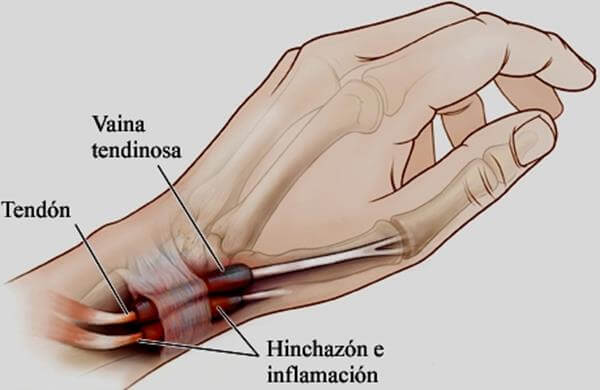
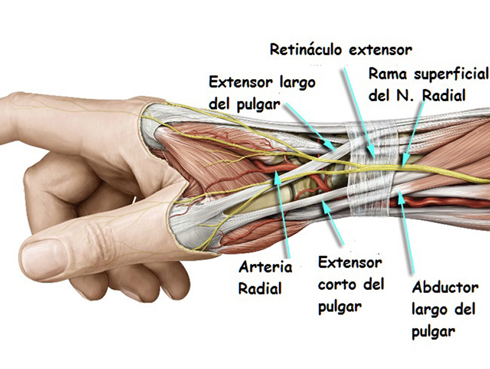
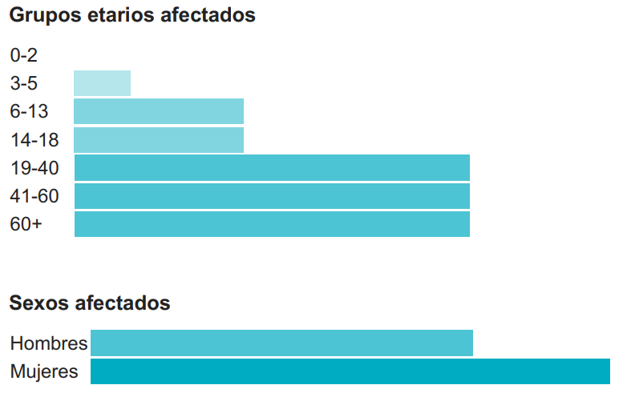
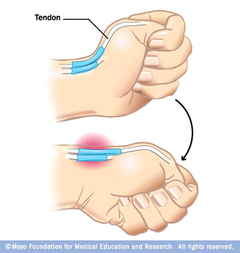
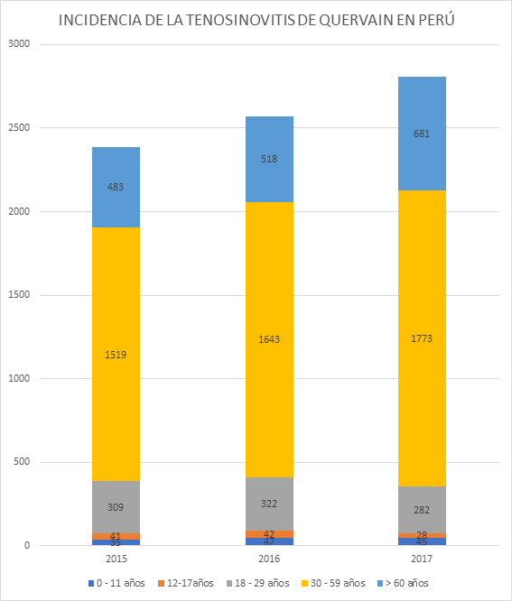
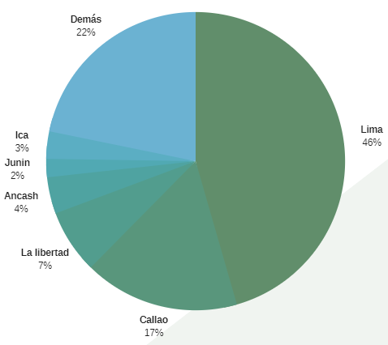
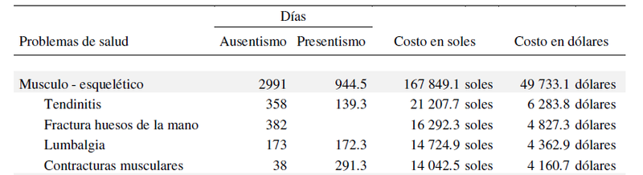
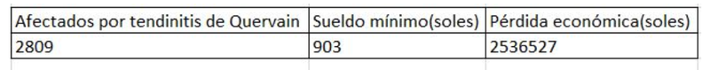

DEFINICIÓN DE LA PROBLEMÁTICA
¿QUÉ ES LA TENDINITIS DE QUERVAIN?
Es una afección, descrita por Fritz de Quervain en 1895, que provoca la inflamación de las fundas que recubren el extensor corto y abductor largo del pulgar que se localizan en la muñeca y recorren el primer compartimento extensor de la muñeca (Carlos Thams, 2017). Además, esta reconocida como enfermedad laboral.
 (Fuente: Sinew Therapeutics)
¿A QUIÉN AFECTA?
- Personas mayores a 30 años.
- Mujeres puérperas después de dar a luz al bebé.
- Empleos o pasatiempos que supongan movimientos repetitivos de la mano y de la muñeca. Por ejemplo: transcriptores, guitarristas, pianistas, peones, albañiles, deportes con raquetas o palos, comunidad con smarthpones.
(Fuente: Mayo Clinic, Google)
¿QUÉ LA CAUSA?
- Traumatismos y micro-traumatismos repetitivos.
- Lesiones directas en la muñeca.
- Artritis reumatoide.
- Uso excesivo de la fuerza del pulgar.
- Sobrecargo crónico en la muñeca.
¿CUALES SON LOS SÍNTOMAS?
- Dolor a la altura de la muñeca.
- Entumecimiento a lo largo de la parte posterior del pulgar e indice .
- Aparición de una pequeña protuberancia en la muñeca.
- En casos graves, el dolor se extenderá hasta el brazo.
COMO DETECTARLAS
Para ser detectada se debe acudir a un especialista. La prueba aplicada más común es la llamada Finkelstein. Existen otras como Brunelli y la mano con posición de "aventón". En caso de presencia de dolor, hay altas probabilidades de la presencia de tendinitis. Sin embargo, la ecografía de partes blandas resulta un método adecuado para confirmar el diagnóstico.
PROBLEMÁTICA
IMPACTO ECONÓMICO NEGATIVO DEBIDO A LA INCAPACIDAD MOMENTÁNEA POR PARTE DE PERSONAS MAYORES A 30 AÑOS AFECTADAS CON LA TENOSINOVITIS DE QUERVAIN
INCIDENCIA EN PERÚ
El número de casos ha ido incrementando año con año cobrando 300 personas más por cada uno. Del total de afectados, los mayores de 30 años representan el 63%. Lima representa el mayor porcentaje de diagnosticados con tenosivitis con un 46% seguido por Callao con un 17%, según los datos proporcionados por el MINSA del año 2017.
 (Fuente: MINSA, Casos de tenosinovitis de estiloides radial (de Quervain) por etapas de vida, según departamentos - AÑOS 2015,2016,2017) Elaboración propia
¿CÓMO AFECTA ECONÓMICAMENTE?
El costo por absentismo y presentismo causado por la tendinitis es de 21 207.7 soles para la empresa. La pérdida por tendinitis, considerando el sueldo mínimo 2018, es de más de dos millones y medio por año. El tratamiento normal, por férula, requiere un tiempo de 4 a 6 semanas de recuperación. Considerando un sueldo de 34.7 diario, se obtiene una pérdida de entre 903 a 1 346 soles.
Fuente: Silva(2017). Costos indirectos de los problemas de salud en empresas manufactureras de calzado.
Fuente: Elaboración propia
BIBLIOGRAFIA:
- CLINICA MEDS (2017). Tenosinovitis De Quervain (Tendinitis Extensor Del Pulgar). Recuperado de https://www.meds.cl/
- Cardozo, Georgina.(2012). Tenosinovitis de Quervain. Causas, síntomas y tratamiento. Recuperado de https://www.fisioterapia-online.com/
- Fernandez, Raúl (2011). El ataque de Quervain a los guitarristas. Guitar Invaders [Blog]. Recuperado de: http://guitarinvaders.com/blog/
- Howell, E. R. (2012). Conservative care of De Quervain’s tenosynovitis/ tendinopathy in a warehouse worker and recreational cyclist: a case report. The Journal of the Canadian Chiropractic Association, 56(2), 121–127.
- Mayo Clinic (2018). Tenosinovitis de Quervain. 24 de Febrero 2018. Recuperado de https://www.mayoclinic.org/
- MINSA (2010). Catálogo Sectorial de procedimientos médicos. [PDF] ftp://ftp2.minsa.gob.pe/normaslegales/2010/RM530-2010MINSA.pdf
- MINSA (2017). Casos de tenosinovitis de estiloides radial (de Quervain) por etapas de vida, según departamentos - año 2017. Sistema de Atención de Solicitudes de Acceso a la Información Pública.
- Parra, Lorena (2017). Tenosinovitis de Quervain – Traumatología Mano MEDS [videograbación]. Chile: Clínica MEDS. https://www.youtube.com/watch?time_continue=66&v=FhU-mitEpRM
- Silva, Javier (2017). Costos indirectos de los problemas de salud en empresas manufactureras de calzado: caracterización e impacto Lima - Peru 2016. Universidad Nacional Mayor de San Marcos.
- Thams, Carlos (2017). La tenosinovitis de De Quervain afecta más a las mujeres. Canarias7, 2017 noviembre. https://www.hpshospitales.com/wp-content/uploads/2017/11/HPS-SABADO-tenosinovitis-Thams.pdf